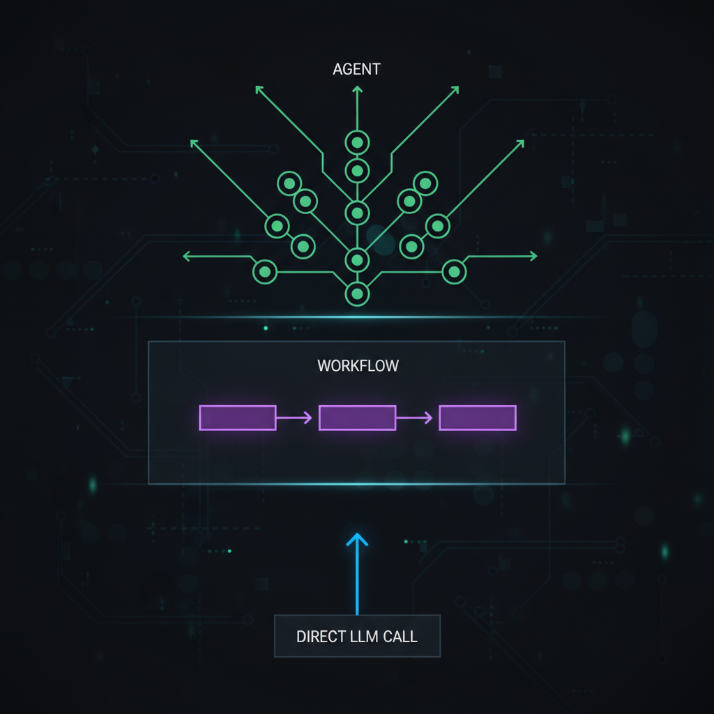
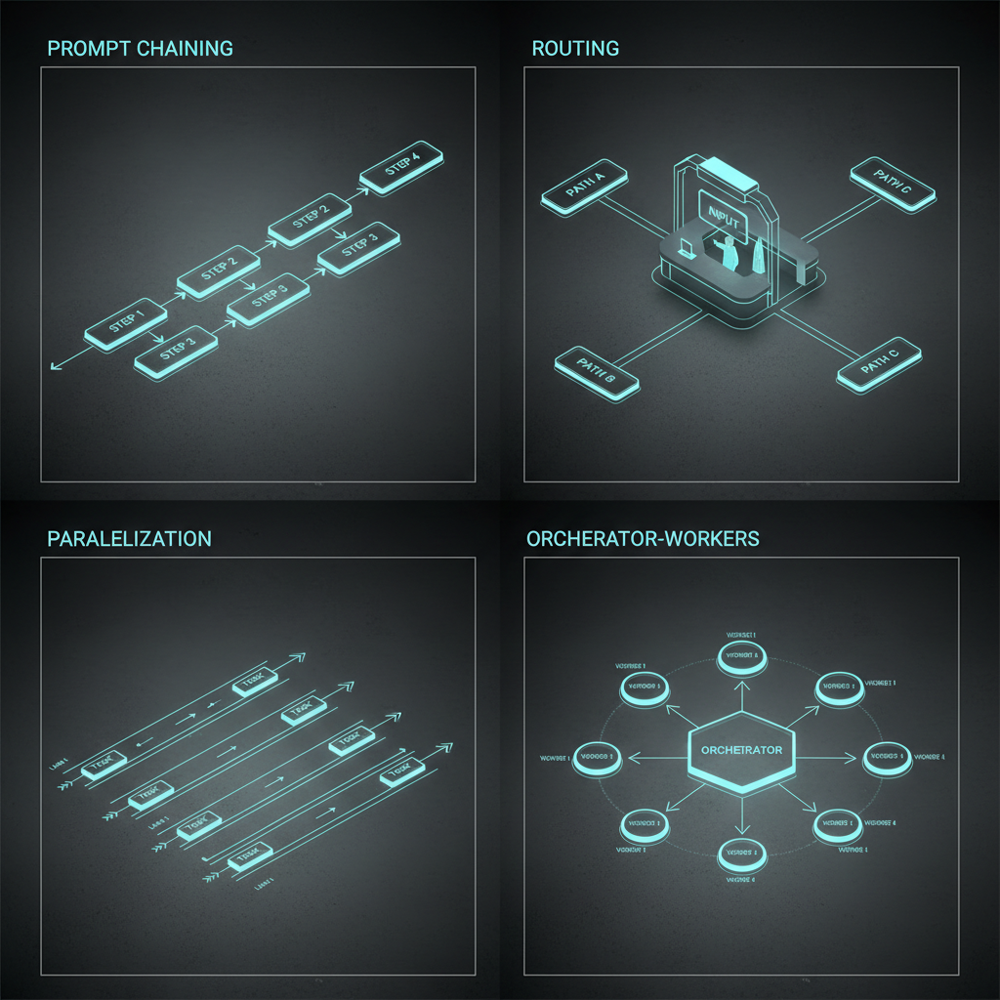
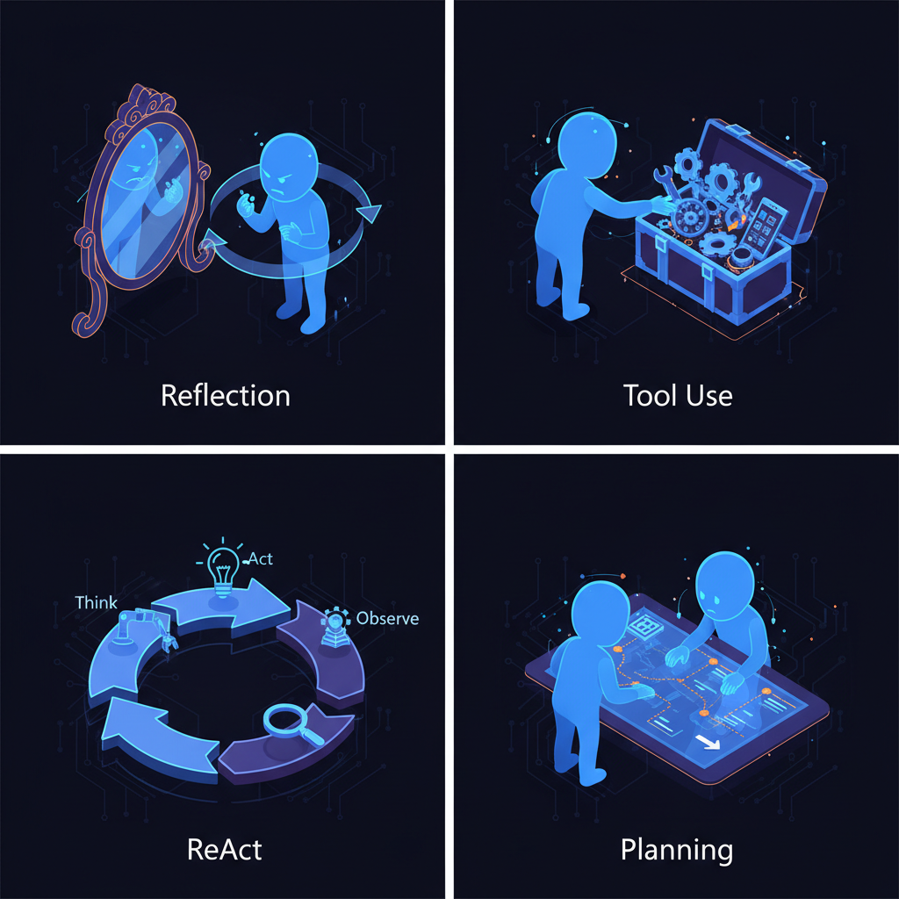

Quando você constrói software com LLMs, precisa decidir quanto controle dar pro modelo. Seu código roda cada step, ou o modelo descobre os steps sozinho?
Agentic patterns são design patterns pra essa decisão. São as mesmas escolhas arquiteturais que você já faz em qualquer sistema: quem controla o que vem a seguir, o que acontece em falha, como dado flui entre componentes. A diferença é que alguns desses componentes agora são modelos de linguagem.
Este post é adaptação enriquecida em PT-BR do "9 Agentic Patterns, Simply Explained" do Neo Kim, com adições baseadas no framework canônico da Anthropic e patterns que vejo em produção.
A decisão fundamental — quanto controle dar

Em uma ponta: workflow patterns onde seu código controla cada step. Na outra: agent patterns onde o LLM decide o que fazer. Em algum ponto, você para de dizer ao modelo o que fazer e começa a deixar ele descobrir.
A primeira pergunta não é qual pattern usar — é se você precisa de algum.
Comece pelo mais simples — direct LLM call
Maioria das tarefas não precisa de agent. Maioria não precisa nem de workflow. Default: a configuração mais simples que funciona. Escala só quando essa configuração quebra.
Direct API call ao LLM resolve muito mais do que parece:
- Summarization
- Classification
- Extraction
- Rewriting
- Translation
- Geração de código com specs claros
Maioria pula esse nível cedo demais.
Quando subir pra workflow
Escale quando a tarefa tem muitos steps, e quando atenção focada em cada step melhora o output. Entre steps, você define validation gates que verificam o output antes de passar adiante.
Característica definidora: você consegue escrever todos os steps antes do sistema rodar. Seu código tem o control flow. O LLM cuida dos detalhes.
Quando subir pra agent
Agent patterns são pra quando o número e tipo de steps são desconhecidos até o sistema rodar. O modelo olha resultados, decide o que fazer, e escolhe seu próprio caminho.
Exemplo: support agent que lida com cancelamentos. Cliente pede cancelamento — agent não sabe upfront se precisa checar política de reembolso, ver status do envio, ou escalar pra humano. Steps dependem do que ele descobre.
Sinal pra trocar workflow por agent: você escreve mais código tratando erros e exceptions do que fazendo o trabalho real. Ou continua adicionando special cases pra situações que o LLM encontra e você não planejou.
Erro comum: chegar a 70-80% num protótipo e assumir que a arquitetura precisa upgrade. Geralmente não precisa. O problema real costuma ser qualidade do prompt ou gates de validação faltando. Migre pra pattern mais complexo só quando o simples de fato falhou — não quando parece limitante.
Workflow patterns — seu código no controle

1. Prompt Chaining
Quebra uma tarefa em série de calls LLM. Cada call pega o output do passo anterior, e um check entre eles garante que está correto antes de avançar.
Igual CI/CD pipeline: compile, lint, test, package. Cada step tem que passar antes do próximo rodar. Se testes falham, pipeline para.
Exemplo: review de contrato jurídico — extrai cláusulas → classifica risco de cada uma → gera summary das de alto risco pra review humano. Produtos como Thomson Reuters CoCounsel e Robin AI rodam variações disso.
Trade-offs: latência cresce linearmente — 5 steps = 5 round-trips. Erros se propagam: se step 2 mal-classifica, steps 3-5 processam input ruim. Validation gates pegam falhas cedo, mas só pegam o que suas condições conseguem pegar.
2. Routing
Classifica o input e manda pro handler certo: prompt diferente, modelo diferente, ou sub-workflow diferente. Cada handler é construído pra um tipo de input.
Igual recepção de hospital. Paciente entra, recepção checa sintomas, encaminha pro médico certo. Recepção não trata ninguém. Médico não faz check-in.
Exemplo: Sierra AI roteia entre 15+ modelos — classificação vai pra um, tool calling pra outro, geração de resposta pra terceiro. Customer support tipo Intercom Fin roteia cada request pra AI handler ou humano baseado em intent + sentiment.
O argumento de custo está embutido: queries simples vão pra modelos baratos e rápidos. Complexos vão pra modelos caros e capazes. Você não paga preço premium por trabalho que modelo menor resolve.
Trade-offs (1 palavra: misclassification): query complexa roteada pro modelo barato = resposta ruim. Query simples no modelo caro = desperdício. O router é single point of failure — a acurácia dele é o teto do sistema inteiro.
3. Parallelization
Duas variantes que resolvem problemas diferentes:
Sectioning — partes independentes em paralelo
Divide tarefa em partes independentes, roda em paralelo, merge no fim. Como crew de construção: eletricistas, encanadores, carpinteiros trabalham no mesmo prédio ao mesmo tempo. Trabalho combinado no final.
Exemplo: GitHub Advanced Security — CodeQL + Snyk + Semgrep escaneiam o mesmo PR em paralelo, cada um produz alerts independentes.
Voting — mesma tarefa, múltiplas vezes
Roda a mesma tarefa muitas vezes com prompts diferentes, combina respostas. Como júri: cada jurado vê a mesma evidência, decide individual, grupo decide junto.
Exemplo: review de segurança — 3 prompts separados analisam mesma mudança de código pra vulnerabilities, sinaliza issue só se 2+ concordam. Mais caro, mas pega menos falsos alarmes.
Em resumo: sectioning dá trabalho diferente pra cada worker; voting dá mesmo trabalho pra todos.
Trade-offs: custo multiplica com cada branch paralela. Partial failures são decisão de design — uma branch falha, retry, prossegue com as outras, ou aborta tudo? Não há resposta universal, e escolha errada é cara.
4. Orchestrator-Workers
Um LLM central quebra a tarefa em subtarefas, atribui cada uma a um LLM worker, combina os resultados. Diferença vs anteriores: subtarefas não são conhecidas upfront — orchestrator descobre conforme avança.
Como general contractor construindo casa:
- Contrata as pessoas certas, mas não sabe todos os subcontractors upfront.
- Encanador acha problema estrutural — contractor traz engenheiro estrutural.
- Plano muda conforme o projeto revela novos problemas.
Exemplo: Cursor agent mode — agents diferentes pra partes diferentes do codebase. Um adicionando testes, outro atualizando docs, terceiro refatorando shared utilities.
Você confia no LLM pra descobrir o que precisa ser feito, não só fazer o que foi atribuído.
Trade-offs: orchestrator pode perder o goal original. Quebra tarefas simples em subtarefas demais. Workers terminam mais rápido do que ele consegue combinar — orchestrator vira o gargalo.
Agent patterns — LLM no controle

Com agent patterns, você para de definir o que acontece e em qual ordem. Em vez de steps, você define constraints: quais tools estão disponíveis, quanto o modelo pode gastar, quando parar. O modelo observa, raciocina, escolhe o próximo passo.
5. Reflection
LLM gera output, revisa o próprio trabalho, conserta problemas que ele mesmo encontrou. Auto-crítica em loop.
Pattern simples mas poderoso: 2 calls em vez de 1, mas qualidade quase sempre melhora dramaticamente em tarefas onde "primeira tentativa raramente é boa" — code generation, writing, math reasoning.
Implementação típica:
1. LLM gera draft.
2. LLM (mesmo modelo) revisa o draft com prompt:
"Aja como reviewer cético. Liste problemas, erros, melhorias."
3. LLM gera v2 incorporando o feedback.
4. (Opcional) Repete até critério de parada.Variantes: Self-Refine (paper Madaan et al., 2023), Reflexion (Shinn et al., 2023 — com memory persistente entre tentativas).
Trade-offs: 2-3× custo. Risco de "over-correction" — modelo introduz problemas novos enquanto corrige antigos. Cap o número de iterações.
6. Tool Use
LLM tem acesso a tools e decide quais chamar pra completar a tarefa. É o pattern mais usado em produção — Claude, GPT-4, Gemini todos têm "function calling" nativo.
Tools podem ser:
- Acesso a dados:
search_database,read_file,fetch_url. - Ações:
send_email,create_ticket,execute_sql. - Computação:
run_python,calculate,plot_chart. - Outras AIs:
image_generate,transcribe_audio.
MCP (Model Context Protocol) virou o padrão pra expor tools — coberto no post sobre MCP.
Trade-offs: LLM pode escolher tool errada, passar argumentos errados, ou loop chamando a mesma tool. Mitigações: tool descriptions claras, schema validation rigorosa, max-call limits, human-in-loop pra ações destrutivas.
7. ReAct (Reason + Act)
O loop fundamental que mistura raciocínio com ação. Coberto em profundidade no post sobre AI agents.
Em essência: Thought → Action → Observation → Thought → ... até atingir a meta. Diferente de Tool Use puro, o ReAct intercala thinking explícito entre cada ação. Paper original (Yao et al., 2022).
Vantagem: traçabilidade. Você vê o raciocínio do agent em cada step. Facilita debug e auditoria.
Trade-off: verboso. Cada step gera tokens de "thinking" que custam mas não viram output útil.
8. Planning
Agent gera plano completo upfront, depois executa. Diferente de ReAct (decide step-a-step), Planning antecipa a sequência inteira.
Plan-and-Execute: agent planeja → executa em ordem → revisa se necessário.
Tree of Thoughts: planeja múltiplos caminhos possíveis, explora, escolhe melhor (Yao et al., 2023).
LLM Compiler (Berkeley): planeja DAG de tool calls, executa em paralelo (paper).
Vantagens: planos são revisáveis humano-readable. Pode paralelizar steps independentes.
Trade-off: rigidez. Plano feito upfront não se adapta bem se realidade desvia.
9. Evaluator-Optimizer Loop (o "reliability layer")
Não é pattern de agent puro — é uma camada de confiabilidade aplicada em cima de qualquer agent. Adiciona:
- Evaluator: LLM separado (ou heurística) que pontua o output da iteração atual.
- Iteration limits: cap de número máximo de iterações.
- Cost control: cap de tokens/dollars por tarefa.
- Stopping criteria: para quando score > threshold OU iterações esgotadas OU custo excedido.
Pattern essencial em produção. Sem ele, agents podem loop infinito ou burnar budget. Frameworks como LangGraph têm primitives específicos pra implementar esse loop.
Multi-Agent — quando 1 agent não basta
Agent patterns vivem dentro de multi-agent architectures — muitos agents cooperando no mesmo problema, cada um com seu papel. Próximo passo de complexidade.
Patterns multi-agent comuns:
- Supervisor-Worker: como Orchestrator-Workers, mas workers são agents completos (não só LLM calls). Supervisor delega, workers podem usar tools próprios.
- Peer-to-peer: agents conversam direto sem coordenador central. Mais flexível, mais difícil de debugar.
- Blackboard: agents leem/escrevem em state compartilhado (Redis, S3). Coordenam indiretamente via estado.
- Specialist team: cada agent é "especialista" (frontend, backend, QA, security). Coordenação via shared task queue.
Cobertura completa no próximo post sobre multi-agent architecture.
Case study real — code review pipeline
Pipeline de code review com IA que combina múltiplos patterns:
- Routing: classifica o PR (bugfix / feature / refactor) e roteia pra workflow específico.
- Parallelization (sectioning): roda análises em paralelo — security scan, test coverage, lint, complexity, documentation.
- Reflection: cada análise revisa o próprio output antes de reportar.
- Voting: 3 prompts pra security check, flag só se 2+ concordam.
- Orchestrator: agrega tudo num review unificado priorizado.
- Evaluator-Optimizer: judge LLM avalia se o review é útil; se score < 7/10, regenera.
Esse pattern stack é basicamente o que CodeRabbit, Greptile e Diamond AI fazem por baixo dos panos.
Tabela de decisão rápida
| Padrão | Quando usar | Quando evitar |
|---|---|---|
| Direct call | Tarefa única bem definida | Múltiplos steps interdependentes |
| Prompt Chaining | Steps lineares, ordem fixa, validation gates | Steps que dependem de decisão dinâmica |
| Routing | Input diverso, handlers especializados | Classificação ambígua, tipos overlap |
| Parallelization | Tarefas independentes ou voting de confiança | Steps que dependem uns dos outros |
| Orchestrator-Workers | Subtarefas descobertas dinamicamente | Tarefas previsíveis (use Chaining) |
| Reflection | Code gen, writing, math — qualidade importa | Tarefas triviais, custo crítico |
| Tool Use | Agent precisa acessar mundo real | Pure text-in-text-out |
| ReAct | Tarefas exploratórias, debug | Quando caminho é conhecido |
| Planning | Tarefas longas, sequências previsíveis | Ambiente muda durante execução |
Frameworks que implementam esses patterns
- LangGraph: state machine, suporta todos os patterns acima.
- CrewAI: foco em multi-agent, Orchestrator-Workers nativo.
- OpenAI Swarm: lean, foco em handoffs (routing dinâmico).
- Microsoft AutoGen: framework full pra multi-agent conversation.
- Pydantic AI: type-safe, suporta Reflection + Tool Use elegante.
- Haystack: RAG + agents, modular.
Conclusão
Agentic patterns não são "novos design patterns". São aplicação de design patterns clássicos (pipeline, broker, observer, strategy) ao contexto onde alguns componentes são LLMs probabilísticos. A maior decisão é quanto controle dar ao modelo — quanto mais controle, mais flexível, mais imprevisível, mais caro de debugar.
Regra de ouro: sempre comece com o pattern mais simples. Direct call → Chaining → Routing → Parallelization → Orchestrator → Agent (Reflection / Tool Use / ReAct / Planning). Suba o nível só quando há evidência clara de que o anterior falhou — não quando "parece limitante".
Em produção, sistemas maduros combinam múltiplos patterns. Mas isso é resultado de iteração — não de arquitetura prematura. Pattern-driven é tão errado quanto premature optimization.
Fonte original: "9 Agentic Patterns, Simply Explained" por Neo Kim, publicado em The System Design Newsletter em 22 de abril de 2026. Esta adaptação em PT-BR cobre os 4 workflow patterns (parte gratuita) e expande pesadamente com os 4 agent patterns + evaluator-optimizer, baseando-se no framework canônico da Anthropic "Building Effective Agents" — leitura obrigatória pra quem leva agents a sério. Adiciona também tabela de decisão, case study real, e os frameworks que implementam cada pattern.